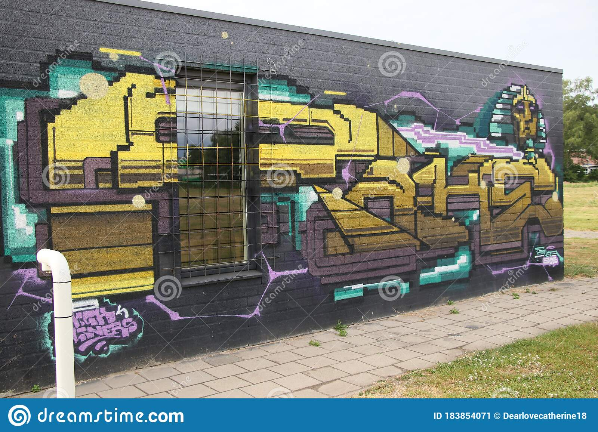

It is a form of visual communication, usually illegal, involving the unauthorized marking of public space by an individual or group. Although the common image of graffiti is a stylistic symbol or phrase spray-painted on a wall by a member of a street gang, some graffiti is not gang-related. Graffiti can be understood as antisocial behaviour performed in order to gain attention or as a form of thrill seeking, but it also can be understood as an expressive art form.
Street art is interesting, creative and unrestricted. It’s an incredibly diverse and varied art movement, one that is growing in popularity as work being exhibited in the streets continues to develop in terms of size, style, and sheer skill.
The first drawings on walls appeared in caves thousands of years ago. Later the Ancient Romans and Greeks wrote their names and protest poems on buildings. Modern graffiti seems to have appeared in Philadelphia in the early 1960s, and by the late sixties it had reached New York. The new art form really took off in the 1970s, when people began writing their names, or ‘tags’ , on buildings all over the city. In the mid seventies it was sometimes hard to see out of a subway car window, because the trains were completely covered in spray paintings known as ‘masterpieces’.
In the early days, the ‘taggers’ were part of street gangs who were concerned with marking their territory. They worked in groups called ‘crews’ , and called what they did ‘writing’ – the term ‘graffiti’ was first used by The New York Times and the novelist Norman Mailer. Art galleries in New York began buying graffiti in the early seventies. But at the same time that it began to be regarded as an art form , John Lindsay, the then mayor of New York, declared the first war on graffiti. By the 1980s it became much harder to write on subway trains without being caught, and instead many of the more established graffiti artists began using roofs of buildings or canvases.
Graffiti and street art is an anonymous tool used to express yourself and your point of view on on almost anything, including politics, personal expression, culture etc. Graffiti is gaining popularity and people are being more creative and expressive with art form.
- Political Graffiti: when a graffiti artist paints or gives their point of view on politics they usually like to stay anonymous. That's because people may have a different opinion to the one expressed in their work, due to race, sex, culture ect. Take Banksy for example, (learn more about Banksy on page 5) he/she is expresses himself and his point of view on politics and life. Political graffiti does not always have to be about politics itself, but it can also be your point of view nature, the finical world and just life in general.
- Fame and Popularity: graffiti artists create tags, signitures and noticeable features in their work to gain a reputation and a graffiti style. Fafi a French graffiti artist gained fame over time and now she has worked with M.A.C makeup to create her very own graffiti inspired make-up line. Just like celebrities, graffiti artists sign brand deals to gain fame and popularity. In the 21st century graffiti is gaining more respect from the public so theres more of a chance to make a living of graffiti, murals and street art.
- Expression of the Self: unlike political graffiti, some graffiti may not have a significant meaning to the public or serve any social purpose. Graffiti may be created to express personal meaning or simply be a tool for people to express individual concerns, thoughts, feelings, etc. To create graffiti in this way may be meaningless to some, but it may hold a secret meaning that may be special\meaningful to the artist. This type of graffiti is usually consists of words or a sentence rather than a image or mural.
- Cultural Graffiti: graffiti is used to express your point of view, concerns, feelings etc. But it can also be a tool to express your nature and or religion. When graffiti first became popular around the same time as the Civil Rights Movement (1950's and 1960's), people wanted to be accepted for what colour, race sex etc they were. Going back to political graffiti people wanted to have a voice. Racism is sadly still a part of our lives, so graffiti lets people share their point of view on this topic (positive or negative).
- Humorous Graffiti: humorous graffiti is just for the enjoyment of the artist and the public. This graffiti may be making fun of, mocking or just messing with a person's painting or evan a certain gender or race. Some may find this style of graffiti offensive and others may consider it a waste of public space. None the less humorous graffiti is one of the most fast growing graffiti styles around the world.
- Creativity: Street art isn’t just limited to painting on walls. It’s about interaction within the public space. And so many different types and styles of street and urban art come under that umbrella.
Well-worked graffiti helps to redress this problem by bringing art directly to the public. If there is a nice graffiti art at the walls on the street, everyone will see it and maybe they will be more interested in art. Another advantage is that individuals get the freedom to express themselves with graffiti.
Graffiti is seen as a type of art to many people, graffiti is a way to express oneself. It can turn a boring old brick wall into a piece of art. As a result; graffiti can decorate bedraggled streets and creates a whole new image of a particularly area or even of a whole city. Also, people who do graffiti are not always gang members. Many people who do graffiti are just normal people trying to make a statement.
Graffiti has its advantages and disadvantages but it depends on the perspective one is looking at it. For many people the main disadvantage about graffiti is that graffiti can open the door to other “crimes” such as burglary and assault. Graffiti also is expensive to clean up. For example Los Angeles County had to spend 28 million dollars on graffiti removal. Another reason people believe graffiti is bad, is because people put curse words and inappropriate images in their graffiti. As a result, lots of people see graffiti as vulgar or distasteful.

Another thing that is negative about graffiti is that it is sometimes used for gangs to mark their territory. So when another gang or random person covers up the old graffiti with their own, it can lead to violence and other crimes. Another reason that graffiti can be seen as a disadvantage, is because it is technically damaging someone else’s property.
